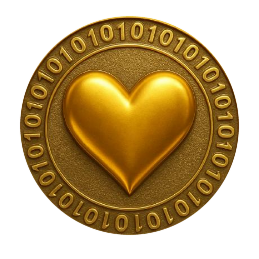

THE LUVchart · buy & sell LUV live ❤
· buy & sell LUV live ❤connect-src 'self', so the
chart cannot call anywhere else even if it wanted to; the collector alone talks to the
chain, once a minute, on its own cadence.Price as sentiment. LUV's fundamentals are fixed at genesis — supply immutable, no mint, no burn schedule, no earnings — so what is left to move the price is the community's disposition toward it. That makes this chart the closest thing there is to a pure sentiment series, which is exactly the claim the measurement paper makes for it: the fifth instrument, the oldest one, relabeled honestly.
I. Two clocks, two series
The minute series — 15M through 48H. The collector reads the pair's reserves once a minute and writes the price it computes. Those samples are what the short windows draw: a regularly-clocked view of a market that is not itself regular.
The trade series — ALL, since the seed. A Uniswap V2 price only moves when somebody
trades, so between trades the honest curve is a step, and a step is what the ALL window
draws. Its points are not samples at all: they are the swaps themselves, decoded from the pair's
own Swap events, each one carrying the LUV it moved, the ETH it moved, its block, and
its transaction hash. There is no smoothing between them, because nothing happened between them.
Every trade also carries its own dollar value and its own LUV amount, so usd ÷ luv
is the price that trade paid — the dollar path since the seed needs no historical ETH/USD
series and invents no number. One number on this page is derived rather than measured, and it is
named as such in the caption: the seed's dollar leg, which takes the first trade's own implied
ETH/USD and applies it to the seed price of exactly 10 wei.
II. How to read it
| mark | what it is |
|---|---|
| the gold coin | the live price — the last reading the collector wrote, breathing at 60 bpm with every other heart on this site |
| ▲ green | a buy, sized by the dollars it moved |
| ▼ red | a sell, sized the same way |
| a green bar | TradingView classic: up is the top of the screen, and a bar that closes above its open closes green; one that closes below closes red |
| BB | Bollinger Bands (20, 2) on the bar closes — the orange basis is a 20-bar SMA, the blue bands sit ±2σ around it, the pale fill is the envelope; TradingView's defaults, warmed up on the bars to the left of the screen |
| MACD | MACD (12, 26, 9) in its own pane below, sharing the time axis: the blue MACD line (EMA 12 − EMA 26), the orange signal (EMA 9 of it), and the four-shade histogram — grow-above, fall-above, grow-below, fall-below — exactly as TradingView draws it |
| ╌╌ gold | the seed: exactly 10 wei per LUV, the price this market started from |
| × since the seed | the live price over the seed price — the multiplier, read to two decimals |
| − / + | the zoom ladder: 15M · 1H · 4H · 12H · 24H · 48H · ALL |
| $ 1T · WEI · Ξ | one price, three expressions: a trillion LUV in USDC, wei per one LUV, trillions of LUV per one ETH |
| LOG | a logarithmic price axis — equal ratios take equal space, which is the honest axis for a young market |
The candles bucket whatever series is active into open-high-low-close bars; the bucket is chosen from the window, and the caption always says which. The indicators read those bars' closes — every bar the series holds, not only the visible ones — so the first bar on screen already carries a settled reading. Hover any bar and the tape answers with its OHLC and what BB and MACD read on it. The percentage beside the price is computed from the drawn window itself, first point against last — never quoted from a field that measures a different interval.
III. Why it is in-house
The chart is drawn with d3 v7, vendored into
this site's own substrate/ directory, and with
luv-luvchart.js, which is readable source
you can open in one click. Nothing loads from a CDN, because
cypherpunk4096 §2 says
vendor everything or do without — a permanent unit that fetches its own code from someone else's
host is not permanent. A second charting library was weighed and declined: d3 is already here and
already draws the measure on the live view, and the second one would have
bought nothing this page does not already do.
And the price is not ours to source. The pair creates the price; Uniswap expresses it. Aggregators are enrichment, never the origin — which is why the numbers here are reserves and swap logs rather than somebody's API, and why the screener that replaced the third-party embed on the live view carries zero warning chips: there is nothing between you and the pool to warn about.
IV. The honest caveats
The pool is young and thin. A single sizeable trade moves this price further than it would move a deep one, and the chart will show that honestly rather than smoothing it away. Read the marker sizes: they say how much money made each move.
The dollar leg moves even when the pair does not. LUV is priced in ETH by the pair; the
dollar view multiplies by a median ETH/USD. On a day with no trades the $ 1T line can
still drift, and that drift is Ethereum's, not LUV's. Switch to WEI to see the pair alone.
The minute history is 48 hours deep — 2,880 points, by design. Anything longer is the ALL window's job, and ALL is trade-by-trade, which is a different resolution rather than a longer version of the same one.
A chart is not an oracle. This one measures disposition on the fastest clock in the stack; the rainbow measures it on the slowest, and the measurement paper holds the instruments between. Use them together, and none of them as the needle.
Appendix — reproduce every number
# the live reading (same-origin, written once a minute) curl -s https://luv.pythai.net/market.json | python3 -m json.tool | head -20 # the minute series — [ms, priceUsd, priceNative], 2880 points, 48h curl -s https://luv.pythai.net/market-history.json | python3 -c \ "import sys,json; p=json.load(sys.stdin)['points']; print(len(p), p[0], p[-1])" # the swap log — [ts, block, side, luv, weth, usd, priceNative, maker, tx, logIndex] curl -s https://luv.pythai.net/market-trades.json | python3 -c \ "import sys,json; t=json.load(sys.stdin)['trades']; print(len(t)); print(t[-1])" # the price a trade actually paid: usd / luv python3 -c "print(1.89 / 96762137935362.86)" # → the per-LUV dollar price of that swap # wei per LUV, and the multiple since the seed (the seed was exactly 10 wei) python3 -c "pn=1.0759333148017753e-16; print(pn*1e18, 'wei'); print(pn/1e-17, 'x since the seed')" # one trillion LUV, in dollars — the measure of value python3 -c "print(2.0349717731668952e-13 * 1e12)"
Sources: the Uniswap V2 pair
0x57D2…8a31 ↗
(reserves and Swap events) and the verified token
0x2711…8254 ↗.
Collector: luv-market-collector.mjs, run every 60 seconds. Renderer:
substrate/luv-luvchart.js on
d3 v7.9.0, both served from this origin.